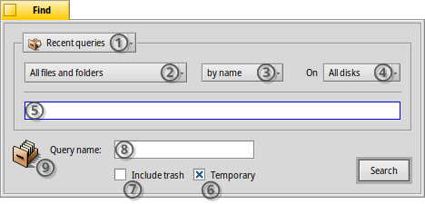
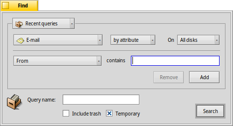
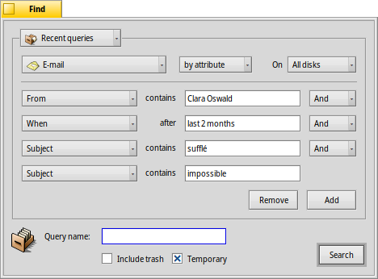
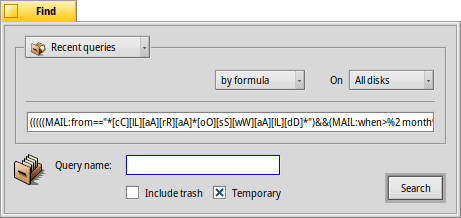
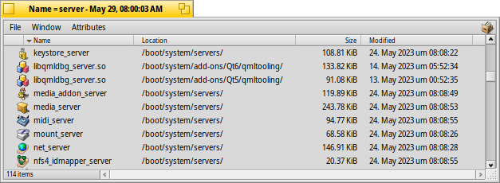

| Índice |
| La ventana Encontrar Consultas básicas - "por nombre" Consultas avanzadas - "por atributo" Consultas todavía más avanzadas - "por fórmula" La ventana de resultados Plantillas de consulta |
Consultas
Una consulta es un archivo de búsqueda basado en atributos de archivo y pueden realizarse dentro de Tracker o en la Terminal. Las consultas se guardan en /boot/home/queries/ y predeterminadamente duran siete días antes de purgarse. Note, estas no son listas de resultados estáticas de su búsqueda, pero están las fórmulas de consulta las cuales disparan una nueva búsqueda en el momento que se abren.
Incluso mejor, no tiene que darle doble clic para rehacer una consulta. Se puede examinar una consulta guardada así como cualquier carpeta al darle doble clic en ella y navegar a través de sus submenús.
 La ventana Encontrar
La ventana Encontrar
Se inicia una consulta invocando el menú (Encontrar) tanto del menú Deskbar o de cualquier ventana del Tracker o el Escritorio (el cual realmente es una ventana de Tracker a pantalla completa). El atajo de teclado es ALT F. Se presenta la ventana Encontrar:
El menú permite una consulta existente y los parámetros de búsqueda actuales como una consulta o como una Plantilla de consulta. También muestra una lista rápida de .
En se puede incluir a la Papelera como una de las ubicaciones de búsqueda.
contiene una lista de todas las plantillas de consulta en el sistema.
Reducir la búsqueda de (Todos los archivos y carpetas) a tipos de archivo específicos.
- Definir el método de búsqueda:
- (por nombre) - una búsqueda básica por el nombre del archivo o carpeta
- (por atributo) - una búsqueda avanzada, se especifican términos de búsqueda para uno o más atributos
- (por fórmula) - una búsqueda todavía más avanzada, se puede refinar un término de búsqueda compleja
Seleccione en cuáles dispositivos buscar.
Ingrese el término de búsqueda.
Consultas básicas - "por Nombre"
Si simplemente quiere encontrar todos los archivos y carpetas en los discos montados que concuerdan con un cierto patrón, simplemente deje el método de búsqueda en , ingrese el término de búsqueda dentro de la caja de texto y presione Enter.
Consultas avanzadas - "por Atributo"
Pueden crearse consultas más avanzadas buscando dentro de los atributos de tipos de archivo específicos. Para que funcione, estos atributos tienen que estar indexados.
Se comienza seleccionando el tipo de archivo de (Todos los archivos y carpetas) a, por ejemplo, (Texto | E-mail) y cambie el método de búsqueda a .
Esto agrega un menú desplegable a la izquierda de la caja de texto y los botones (Agregar) y (Remover) debajo. Del menú se puede seleccionar cuál atributo consultar. Con y se pueden consultar atributos adicionales o removerlos de nuevo. Estos atributos pueden enlazarse lógicamente con AND/OR.
Hagamos una consulta de correo electrónico como ejemplo:
Esta es la ventana Encontrar cuando se están buscando todos los correos electrónicos que Clara Oswald le ha enviado en el tema "sufflé" o "impossible".
Como se ve, buscando a través de atributos basados en tiempo se soportan algunas frases útiles: además de los "últimos 2 meses", se podría usar "hoy", "ayer", "lunes" o "el lunes pasado" (lo cual sería el lunes de la semana pasada), o "los últimos 2 minutos/horas/días/semanas".
Una buena manera de reducir el número de resultados de búsqueda.
Consultas todavía más avanzadas - "por Fórmula"
Escribir una consulta de fórmula a mano es intimidante y realmente muy impráctico. No obstante, tiene sus usos.
Tome la consulta de arriba por atributo de los correos de Clara concernientes a vibraphones, etc. Si tiene todos los atributos y sus términos de búsqueda seleccionados, intente cambiar al modo y se asombrará por esta cadena de búsqueda de una línea:
Una vez más como texto, editado para legibilidad:
(((((MAIL:from=="*[cC][lL][aA][rR][aA] [oO][sS][wW][aA][lL][dD]*")
&&(MAIL:when>=%2 months%))
&&(MAIL:subject=="*[sS][uU][fF][fF][lL][éÉ]*"))
||(MAIL:subject=="*[iI][mM][pP][oO][sS][sS][iI][bB][lL][eE]*"))
&&(BEOS:TYPE=="text/x-email"))
¿Cuál es el uso?
Podría copiar y pegar la cadena dentro de un correo electrónico, foro o IRC para que otros lo usen o depuren.
Se puede usar este método para construir una consulta en modo (Atributo) y luego intercambiar al modo , para generar cómodamente una cadena de búsqueda. Si se la escribe entre comillas, esa cadena de texto se puede usar con el comando query en la Terminal.
Puede afinarse la búsqueda insertando paréntesis donde se necesite, hacer que partes de ella distingan entre mayúsculas y minúsculas o negociar combinaciones lógicas al cambiar, p. ej., "==" por "!=" para un NOT AND. Todo lo que se necesita es un entendimiento básico de expresiones regulares y tal vez algo básico de scripting.
La ventana de resultados
Después de iniciar una búsqueda, la ventana Encontrar se remplazará por una ventana de resultados. Aquí hay un ejemplo que consultó "server":
Además del fondo negro, las ventanas resultantes trabajan exactamente como cualquier otra ventana de Tracker. Algunas cosas valen la pena resaltar:
Puede abrirse la ubicación de un archivo o carpeta al darle doble clic en su atributo de ruta.
Con (Archivo | Editar consulta) o ALT G se puede regresar a la ventana Encontrar para refinar la consulta.
Una búsqueda está viva, p. ej., si un archivo que concuerda el criterio de búsqueda aparece o desaparece del sistema, este cambio se refleja en los resultados en tiempo real.
Se puede asignar una disposición de atributos sensible para resultados de una consulta o un tipo de archivo específico. Abrir una carpeta que contenga archivos del tipo de archivo de los que le gustaría crear una plantilla y acomodar los atributos como le gustaría tener presentados los resultados de la consulta. Copie esta disposición con (Atributos | Copiar disposición).
Abra /boot/home/config/settings/Tracker/DefaultQueryTemplates, cree una nueva carpeta llamada group/filetype, remplace la diagonal con un guión bajo, p. ej., "audio_x-mp3". Abra la nueva carpeta y pegue en la disposición copiada previamente con (Atributos | Pegar disposición).
Plantillas de consulta
Al hacer doble clic en una consulta guardada, la búsqueda de archivos se iniciará en ese mismo momento y la ventana de los resultados de búsqueda aparecerá inmediatamente. Sin embargo, puede haber el caso en que no pretenda hacer la búsqueda exactamente con esos parámetros de búsqueda, sino que los va a usar como el punto de partida para personalizar la fórmula.
Para ese propósito, se puede crear una plantilla al usar la opción de menú (véase (1) en la captura de pantalla al principio). Al hacerle doble clic no se abrirá una ventana de resultados, sino el panel de Encontrar, que entonces permitirá rápidamente cambiar el texto de búsqueda o cambiar los atributos.
Las plantillas de consulta aparecerán en el menú del panel de Encontrar, independientemente de la ubicación en donde hayan sido guardadas.